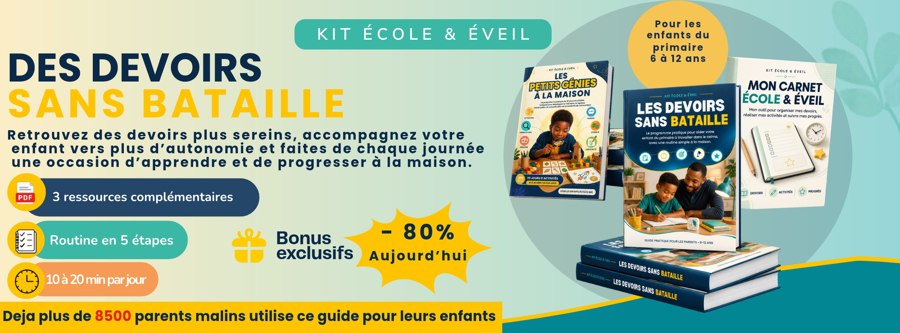
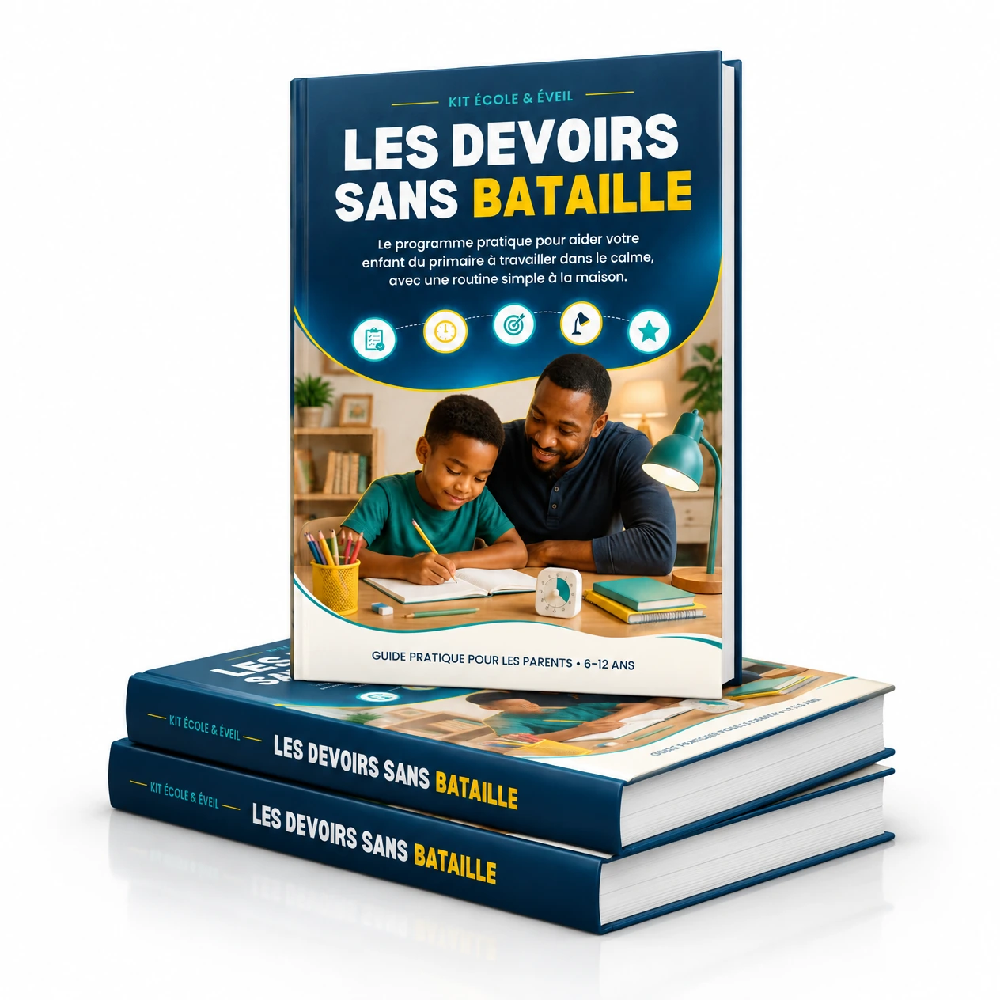
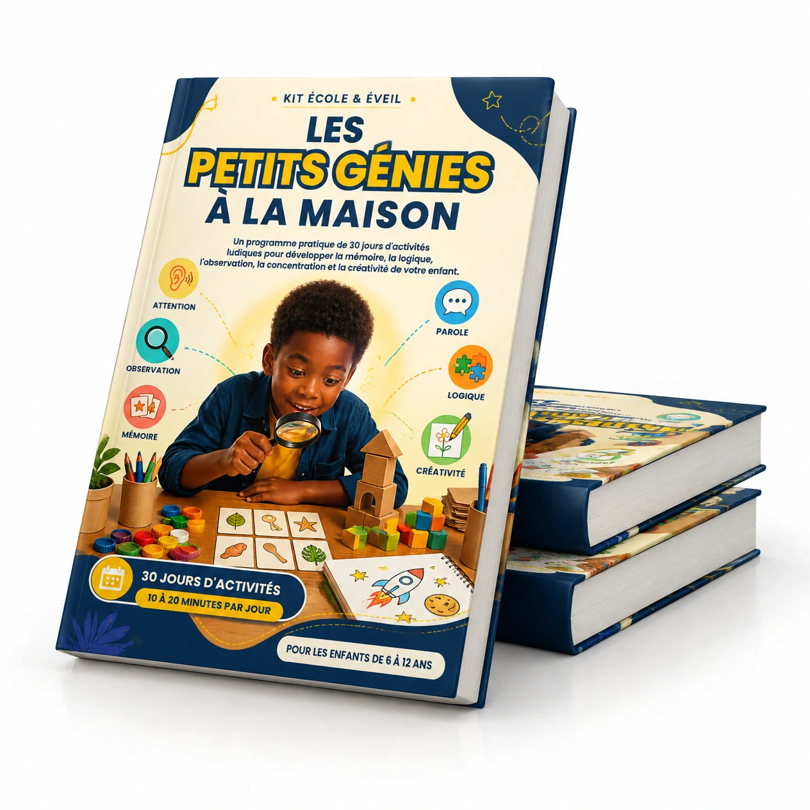
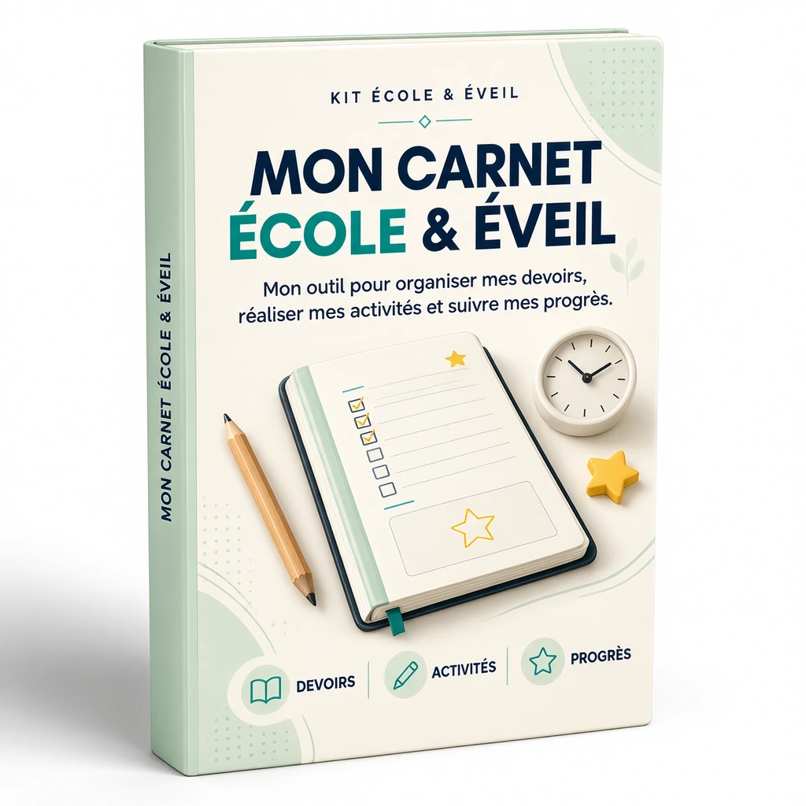
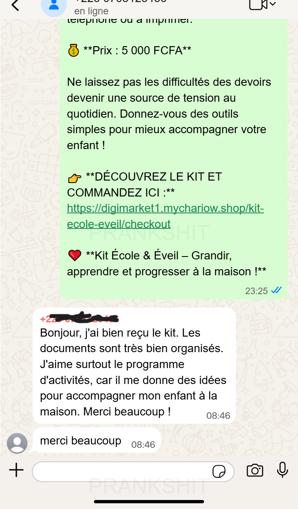
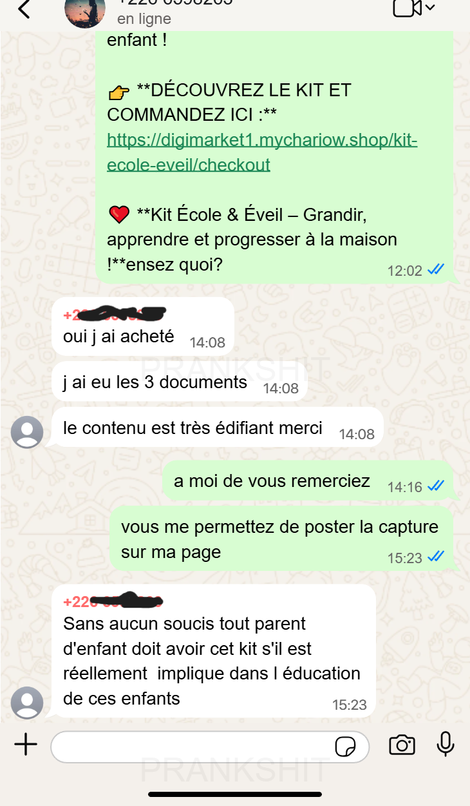
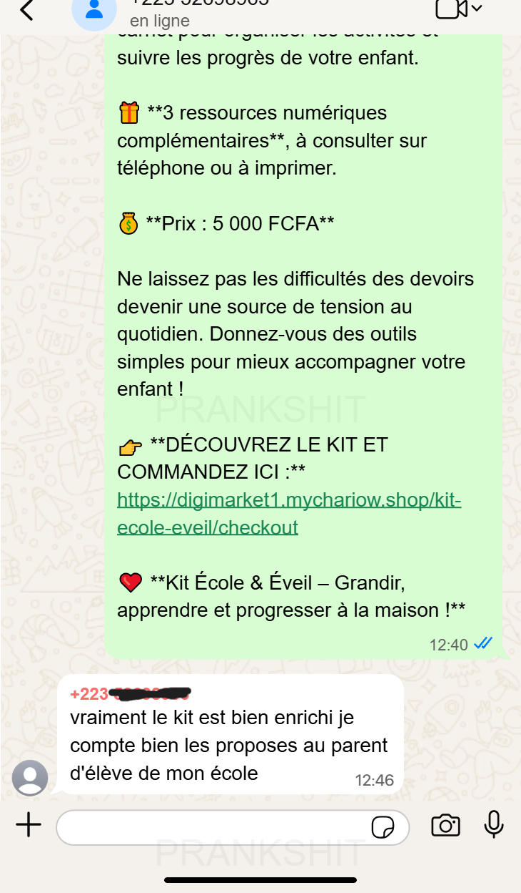

Moins de tensions autour des devoirs. Plus de progrès et de plaisir d'apprendre à la maison.
Pour les parents d’enfants de 6 à 12 ans : une routine pour les devoirs, 30 jours de jeux et un carnet pour suivre les progrès.
- Même si vous avez peu étudié
- Même si vous rentrez tard
- Sans rien acheter pour les jeux
−80 %Profitez-en maintenant
- 3 guides
- Des jeux de 10 à 20 minutes
- Pour les jeux : du matériel de la maison
- parents · Accessible aussi aux parents qui ont peu étudié
Le kit en pratique
- 3 guides PDF
- 6 à 12 ans
- Téléchargeable
Vous vous reconnaissez dans ces soirées ?
Après l'école et le travail, les devoirs deviennent vite le moment le plus tendu de la journée.
- Les devoirs deviennent difficiles à gérer et la séance finit en tension.
- Le travail à la maison n'est pas organisé : pas d'heure fixe, pas de coin.
- Votre enfant a du mal à rester attentif.
- Vous manquez d'idées d'activités éducatives à lui proposer.
- Vous voulez l'accompagner sans être enseignant, et vous ne savez pas comment.
- Vous n'avez pas de méthode pour organiser ces moments.
- Il n'y a pas de suivi régulier des habitudes de travail.
Rassurez-vous : vous n'êtes pas seul(e).
Si la tension monte, ce n’est ni votre faute ni celle de votre enfant. Vous pouvez commencer par changer une seule habitude.
Les problèmes, de plus près
Ouvrez la situation qui vous parle pour voir ce qui la déclenche et ce qu’elle change dans la soirée.
Les devoirs sont difficiles à gérer
- Quand elle apparaît
- Le soir, après l'école et le travail, l'enfant est fatigué.
- Ce qu'elle provoque
- Tension, larmes ou cris ; une fin de séance épuisante pour tout le monde.
Le travail à la maison n'est pas organisé
- Quand elle apparaît
- L'heure et la place changent chaque soir ; le cartable n'est pas prêt.
- Ce qu'elle provoque
- Chaque soir commence par une négociation ; du matériel est oublié.
L'attention est difficile à tenir
- Quand elle apparaît
- Télévision, téléphone ou bruit autour de l'enfant ; pas de vraie pause avant.
- Ce qu'elle provoque
- L'enfant décroche, la séance s'allonge, la patience s'use.
On manque d'idées d'activités
- Quand elle apparaît
- Le week-end et les jours sans devoirs : on ne sait pas quoi proposer.
- Ce qu'elle provoque
- On improvise, ou on laisse passer l'occasion de jouer et d'apprendre ensemble.
On accompagne sans être enseignant
- Quand elle apparaît
- Quand un exercice bloque et que l'on ne connaît pas la réponse.
- Ce qu'elle provoque
- On fait à sa place, ou on se sent inutile et on doute de soi.
Il n'y a pas de méthode
- Quand elle apparaît
- On essaie quelque chose de différent chaque soir.
- Ce qu'elle provoque
- Rien ne s'installe, et on abandonne au bout de quelques jours.
Le suivi n'est pas régulier
- Quand elle apparaît
- Aucune trace de ce qui marche ni de ce qui coince.
- Ce qu'elle provoque
- Difficile de voir les progrès et d'en parler avec l'enseignant.
Faites le mini-diagnostic en 1 minute
Parmi ces quatre phrases, cochez celles qui décrivent vos soirées. Vous verrez quelle partie du guide lire en premier.
Si ces soirées vous parlent, une question reste : pourquoi ce qu'on essaie d'habitude ne tient-il pas ?
Le vrai blocage, ce n'est pas ce que vous croyez…
Imaginez deux familles : même école, mêmes devoirs, même fatigue du soir. Chez l'une, la séance finit calmement. Chez l'autre, elle finit en larmes. La différence n'est pas la chance, ni l'intelligence de l'enfant.
Trois repères avant de commencer :
Votre enfant n'est pas paresseux.
Il n'est pas moins intelligent que les autres.
Il lui manque souvent un cadre plus clair à la maison.
Derrière une soirée qui se passe mal, il y a presque toujours une cause concrète et identifiable :
Tant que le cadre ne change pas, vous restez coincé(e) dans le cycle : fatigue + tension + cris.
Vous avez peut-être déjà essayé… et ça n'a pas tenu
Voici quatre réactions fréquentes, leur effet sur la séance et une autre façon de répondre.
Le kit ne demande ni diplôme, ni matériel coûteux, ni beaucoup de temps : un cadre, des mots, une routine.
Ce qui vous inquiète, nous le comprenons
Beaucoup de parents ont ces inquiétudes. Elles montrent surtout que vous tenez à votre enfant.
« J'ai peur de ne pas assez accompagner mon enfant. »
8 gestes simples à votre portée chaque soir, même avec peu d'études et peu de temps.
« J'ai peur que mon enfant perde sa motivation. »
Des jeux de 10 à 20 minutes, des étoiles à colorier, et l'effort félicité plutôt que la note.
« Je ne sais pas comment stimuler ses capacités. »
30 jours d'activités sur 6 capacités, avec deux niveaux selon l'âge.
« J'ai peur que de mauvaises habitudes s'installent. »
Une routine fixe, un carnet de suivi et un bilan du mois à relire ensemble.
Vous avez reconnu vos soirées et compris ce qui les tend. Voyons maintenant ce que vous cherchez à construire.
Ce que vous voulez vraiment, au fond
Vous aimeriez que votre enfant ose essayer, puisse se tromper et vous demander de l’aide sans crainte.
Souhaits du cœur
- Une relation plus sereine avec votre enfant pendant ces moments
- Des moments éducatifs plus agréables à la maison
- Un enfant qui prend peu à peu confiance en lui
Résultats pratiques
- Des séances de devoirs mieux organisées
- Des habitudes de travail plus régulières
- Un enfant qui travaille avec un peu plus d'autonomie, pas à pas
- Des activités adaptées à son âge
- Une meilleure organisation de la famille autour des apprentissages
Le kit commence par la base de la pyramide : le calme et un cadre. Le reste peut ensuite grandir.
Votre soirée type, avant et après
Voilà ce que le kit vous aide à mettre en place, soir après soir.
Sans cadre
- Les devoirs commencent à n'importe quelle heure, n'importe où.
- Chaque soir commence par une négociation.
- Une erreur déclenche des larmes ou des cris.
- Vous corrigez tout ou vous faites à sa place.
- Rien n'est revu : ça s'oublie le lendemain.
Avec le Kit École & Éveil
- Même heure, même place, chaque jour d'école.
- Une routine en 5 étapes : votre enfant sait ce qui vient ensuite.
- Une pause calme de 2 minutes et des phrases pour désamorcer.
- Votre enfant explique ce qu'il a fait : vous guidez, il apprend.
- Trois révisions courtes (le jour même, le soir, le lendemain).
Demain, les devoirs seront encore là
Voici ce que vous pouvez préparer aujourd’hui pour la prochaine séance.
Si vous continuez à improviser
- Chaque soir, il faut redécider où, quand et comment commencer.
- Vous cherchez vos mots au moment où la fatigue est là.
- Quand ça bloque, vous n'avez aucun plan B sous la main.
- Le week-end passe sans idée d'activité à proposer.
Si vous commencez aujourd'hui
- Ce soir : un coin, une heure, quatre règles (10 minutes).
- Cette semaine : la routine en 5 étapes commence à s'installer.
- Quand ça bloque : un plan B et une phrase qui calme, prêts à l'emploi.
- Sur 30 jours : des jeux à essayer et un carnet où noter ce qui a aidé votre enfant.
Chaque soir, vous avancez d'un pas de plus.
- Retrouver des soirées de devoirs plus calmes, pas à pas.
- Désamorcer les crises sans crier.
- Aider votre enfant sans faire à sa place.
- Installer une routine qui devient une habitude.
- L'aider à se concentrer et à mieux retenir ses leçons.
- Transformer le week-end en jeux qui font réfléchir.
- Suivre ses progrès et fêter chaque effort.
Ce que contient le kit, et ce que ça change pour vous
Chaque élément du kit a une raison d'être : voici ce qu'il vous apporte concrètement.
Ce que vous cherchez, le kit le contient
De la routine du soir au suivi du mois, voici où trouver chaque outil.
Vous pouvez commencer dès aujourd'hui, au tarif exceptionnel de 5 000 FCFA
Chaque semaine d'école est une occasion d'installer de meilleures habitudes : autant la commencer avec les bons outils.
Vous savez ce que vous cherchez à construire. Voici la méthode qui y mène, une étape à la fois.
Et si les devoirs devenaient un moment calme, dès cette semaine ?
Le Kit École & Éveil vous donne une méthode simple, étape par étape. Pas besoin de tout savoir : il vous faut un cadre, des mots et une routine.
Une routine en 5 étapes que votre enfant peut retenir
En retrouvant les mêmes étapes, votre enfant peut commencer sans avoir à renégocier toute la séance.
Et pour le week-end : 30 jours de jeux qui entraînent l'attention, la mémoire, la parole, la logique et la créativité.
Les mots qui calment, prêts à l'emploi
Quand la tension monte, on ne sait plus quoi dire. Le guide vous donne les phrases à la place. Un avant-goût :
…et 6 autres situations dans le guide, avec les plans B pour les 8 moments difficiles.
Voyez la même scène, avec les bons mots
Une scène que beaucoup de parents connaissent : « L'enfant refuse ». Voici comment le guide la désamorce, en 6 gestes.
- EnfantIl repousse son cahier : « Je suis fatigué, je ne veux pas travailler ! »
- ParentIl respire et reconnaît l'émotion : « Je vois que ta journée a été longue. »
- ParentIl propose un choix court : « Tu préfères commencer par 5 minutes de lecture ou de calcul ? »
- EnfantIl choisit la lecture.
- ParentIl lance le minuteur sur 5 minutes et s'assoit calmement à côté.
- ParentIl félicite le démarrage : « Bravo, tu t'es mis au travail dans le calme ! »
Pas de cris, pas de menace, pas de bataille. Ce geste est un des 8 plans B du guide.
Du soir tendu au soir calme : 4 marches claires
Quatre repères pour passer d’une intention à un premier essai, à votre rythme.
Un premier pas dès ce soir
Dès ce soir : 10 minutes pour démarrer, puis 10 à 20 minutes par jour. Des phrases et des plans B prêts : vous n'improvisez plus et vous gagnez du temps.
Vous en êtes capable
Même si vous avez peu étudié : on vous demande d'écouter, de poser des questions et de féliciter l'effort, pas de tout savoir.
De l’aide en cas de doute
Garantie de 7 jours, et un contact WhatsApp pour vos questions.
Un cadre pour la suite
Un cadre, 4 règles, une routine en 5 étapes, 30 jours de jeux : vous savez toujours quoi faire ensuite.
30 jours de jeux pour apprendre, réfléchir et progresser
10 à 20 minutes par jour, en famille, sans note ni punition. Rien à acheter : papier, crayon, bouchons, un pagne, un minuteur.
Découvrez tout ce que vous obtenez avec le Kit École & Éveil
Le premier guide organise les devoirs, le deuxième propose les jeux et le carnet garde une trace des efforts.

Les Devoirs sans bataille
Le guide pour les parents : un programme pratique pour que l'enfant du primaire travaille dans le calme, avec une routine simple.
Organiser les devoirs
- Un mini-diagnostic en 10 questions : repérez la cause principale chez vous et sachez quoi lire en premier.
- La routine en 5 étapes : moins de négociation chaque soir.
- 8 plans B : une réponse prête quand l'enfant refuse, pleure ou ne comprend pas.
Accompagner votre enfant
- Concentration et mémoire : aider votre enfant à retenir, avec un rituel de lecture de 15 minutes.
- Même si vous avez peu étudié : 8 gestes simples à votre portée.
- Parler à l'enseignant, gérer les écrans, engagement parent-enfant et liste de contrôle de 30 secondes.

Les Petits Génies à la Maison
30 jours d'activités ludiques pour développer l'attention, l'observation, la mémoire, la parole, la logique et la créativité.
Jouer à son rythme
- Un défi par jour avec matériel, étapes et question de fin : vous n'avez rien à préparer.
- 2 niveaux (★ 6-8 ans, ★★ 9-12 ans) : l'enfant choisit celui qu'il préfère.
Accompagner les progrès
- Un conseil pour le parent chaque jour : comment jouer, quoi féliciter, quoi éviter.
- 4 semaines d’activités, puis 2 jours de bilan et de défi pour terminer le programme en famille.
Mon Carnet École & Éveil
Le problème qu'il résout : Quand les journées s’enchaînent, on peut oublier ce qui a aidé. Le carnet permet de le noter, puis de le relire avec votre enfant.

Planifier la semaine
- Afficher et cocher la routine du soir avec votre enfant
- Remplir 4 plannings de semaine (et un modèle vierge à photocopier)
Suivre les progrès
- Suivre les 30 jours de jeux et colorier le tableau de 30 étoiles
- Faire le bilan du mois et préparer vos notes pour l'enseignant
Offert uniquement pour les commandes d’aujourd’hui.
Valeur : · offert avec le kit
Ce que vous vous dites peut-être
Avant d'acheter, on a tous des doutes. Voici nos réponses franches.
10 à 20 minutes par jour suffisent pour les jeux, et la routine tient en quelques minutes. Et si le soir est impossible, le guide propose une autre heure fixe.
Aider ne veut pas dire tout savoir. Votre présence, votre calme et vos questions comptent. Le guide a une partie entière pour vous.
Peut-être sans cadre ni mots précis. Ici, un seul changement à la fois, sur 3 mois, avec des plans B quand ça bloque.
Chaque enfant est différent et aucun guide ne peut le promettre. Vous avez la garantie de 7 jours, et nous vous expliquons quand parler à l'enseignant.
Le kit en conversation



Maintenez une image pour la lire. Relâchez pour reprendre le défilement.
Pourquoi nous faire confiance ?
Forte de mon expérience et de nombreux résultats auprès des familles, je suis convaincue que ce kit peut faire une vraie différence dans votre foyer.
Ensemble, faisons de l'école une réussite pour nos enfants !
Votre kit complet, prêt à utiliser ce soir
- Document 1 · Les Devoirs sans batailleRoutine en 5 étapes, phrases qui calment, plans B (24 pages)
- Document 2 · Les Petits Génies à la Maison30 jours d'activités, 6 capacités, 2 niveaux (34 pages)
- Document 3 · Mon Carnet École & ÉveilBonus de lancementPlannings, suivi des 30 jours, bilans, à imprimer (15 pages)
- Bonus offert
Conditions : paiement unique, sans abonnement · accès aux 3 documents après paiement · garantie de 7 jours.
Le bouton ouvre le paiement Chariow. Après confirmation, suivez les instructions de Chariow pour accéder à vos trois PDF.
Clarté de la valeur
Pour 5 000 FCFA, vous obtenez trois ressources complémentaires pour accompagner votre enfant : un programme pour des devoirs plus sereins, 30 jours d'activités éducatives et un carnet de suivi. C'est un ensemble d'outils que vous pourrez réutiliser à la maison, plutôt qu'une simple dépense ponctuelle.
Pourquoi ce prix ?
Nous avons choisi un prix accessible pour permettre au plus grand nombre de familles de profiter de ces ressources. Les 5 000 FCFA donnent accès aux trois documents numériques du Kit École & Éveil, à consulter sur téléphone ou à imprimer.
Essayez le kit sans risque : satisfait ou remboursé.
Garantie sérénité 7 jours
Essayez le kit. Si vous estimez qu'il ne vous aide pas à retrouver des soirées de devoirs plus calmes, vous pouvez demander un remboursement dans les 7 jours. Aucun risque pour vous.
Pour faire votre demande, contactez-nous sur WhatsApp en indiquant votre référence de commande si vous l’avez. Si vous souhaitez d’abord de l’aide, vous pouvez aussi échanger 15 minutes avec nous ; cet échange est facultatif.
Vos questions
Prix, accès aux PDF, âge des enfants et remboursement : ouvrez la question qui vous intéresse.
Quel est le prix ?
Le kit complet (les 3 guides) est à 5 000 FCFA, en paiement unique, avec la garantie de 7 jours. Le prix normal est de 25 000 FCFA. Si le paiement affiche une autre devise, choisissez votre pays sur Chariow pour vérifier le total avant de payer.
J'ai peu étudié : est-ce que je peux vraiment aider mon enfant ?
Oui. Aider ne veut pas dire tout savoir. Le guide a une partie entière pour vous : 8 gestes simples (écouter votre enfant lire, lui demander d'expliquer ce qu'il a fait, expliquer une idée dans votre langue maternelle, préparer vos questions pour l'enseignant…).
Est-ce adapté à mon enfant ?
Le kit est pensé pour les enfants du primaire, de 6 à 12 ans (du CP au CM2 ou de la 1re à la 6e primaire, selon les appellations de votre système scolaire). Le guide donne des repères de durée selon l'âge, et chaque jeu a deux niveaux. Vous gardez la main : vous choisissez ce qui convient à votre enfant, et vous avancez à son rythme.
Je rentre tard du travail ou du marché. Est-ce possible ?
Oui. Choisissez une autre heure fixe (juste avant le repas, ou tôt le matin pour 15 minutes) et gardez 5 minutes le soir pour vérifier et féliciter. Les jeux ne demandent que 10 à 20 minutes, au moment qui vous arrange.
Comment faire si j’ai plusieurs enfants ?
Chacun a sa place et son horaire. Les plus grands travaillent en bloc autonome pendant que vous lancez les plus petits, et un grand peut aider un petit à la fin, calmement.
Que se passe-t-il après mon achat ?
Une fois le paiement confirmé, suivez les indications de Chariow pour retrouver les trois PDF. Gardez votre confirmation de commande. Les documents se lisent sur téléphone. Le carnet s'imprime en A4 (noir et blanc suffit) et les pages peuvent être photocopiées pour les enfants du foyer.
Et si j'ai des questions avant ou après l'achat ?
Écrivez-nous sur WhatsApp : nous vous répondons. Poser ma question.
Et si le kit ne me convient pas ?
Vous pouvez demander un remboursement dans les 7 jours. Voir la garantie ci-dessus.
Vous avez 2 choix aujourd'hui
Choisissez ce qui vous convient pour la prochaine séance de devoirs.
Essayer d’abord un conseil de cette page : choisir avec votre enfant une heure et une place pour les devoirs.
Vous appuyer sur le Kit École & Éveil pour organiser les devoirs, varier les jeux et garder une trace des efforts.
Vous pouvez commencer par un seul outil, sans suivre tout le programme dès ce soir.
Choisir le kit · 5 000 FCFADernier rappel : le kit est à 5 000 FCFA au lieu de 25 000 FCFA. Le carnet bonus est offert uniquement pour les commandes d’aujourd’hui. Vous pouvez commencer dès ce soir.
P.-S. Vous n'avez pas besoin de tout changer d'un coup. Ce soir : un coin fixe, une heure, quatre règles. Un pas par semaine suffit. Et si le kit ne vous convient pas, la garantie de 7 jours vous protège.
Contactez-nous en cas de besoin.